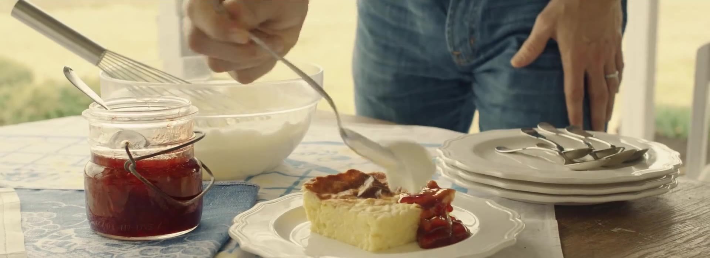
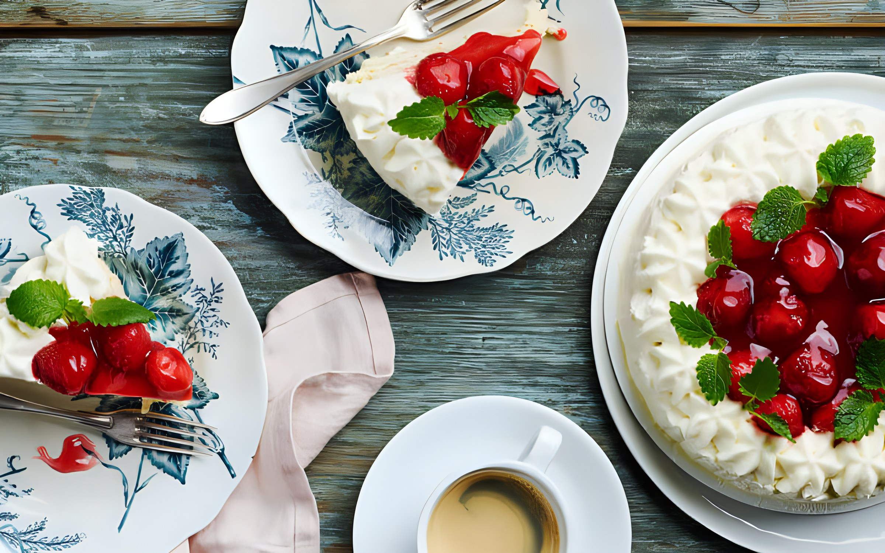
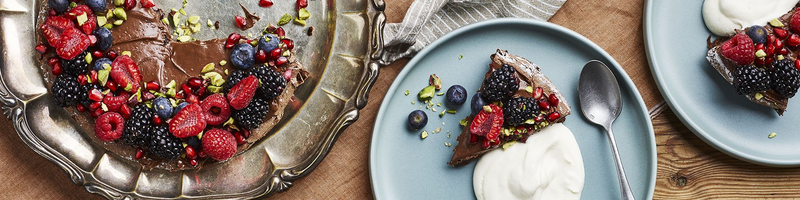
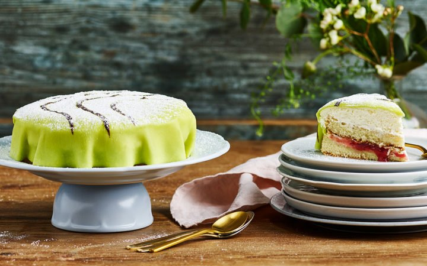
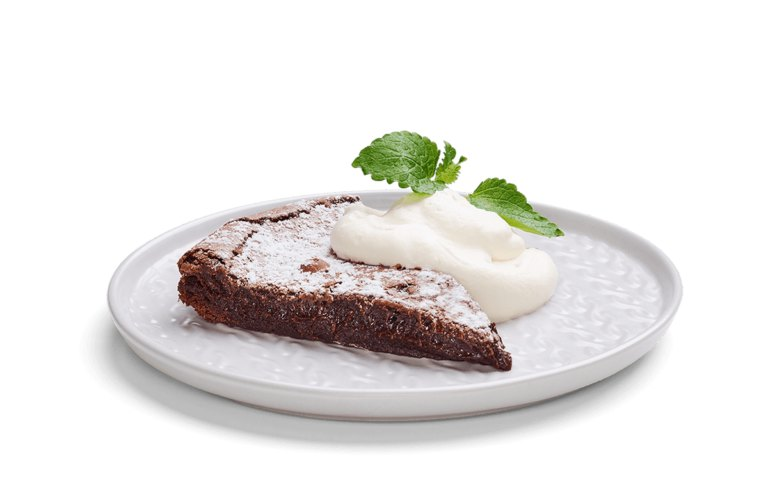

Vår verksamhet
Cirka 100 medarbetare arbetar i fabriken i Frödinge, med bakning, verkstad, lager, tvätteri, produktutveckling, lab, el och kontor. Frödinge är en del av Orkla.
Vad blir det till fikat idag?

Ostkakor
Sveriges mest älskade kaka – med äkta mandel, svensk mjölk och grädde, sedan 1955.
Ostkaka, Ostkaka 600 g, Lättare ostkaka, Julostkaka och Saffransostkaka.

Kladdkakor
Lagom mycket krämig choklad, bakad på enkla, rena ingredienser.
Sju sorter, från klassisk och storpack till citron, kärleksmums, saffran, semla och glutenfri.

Dessertpajer
Frukt- och bärpajer med äkta frasig mördeg och rikligt med syrliga bär.
Äppelpaj och blåbärspaj.

Klassiska tårtor
Fryst och bakad från grunden med egen sockerkaka, hemgjord sylt och maräng.
Jordgubbstårta, prinsesstårta och schwarzwaldtårta.